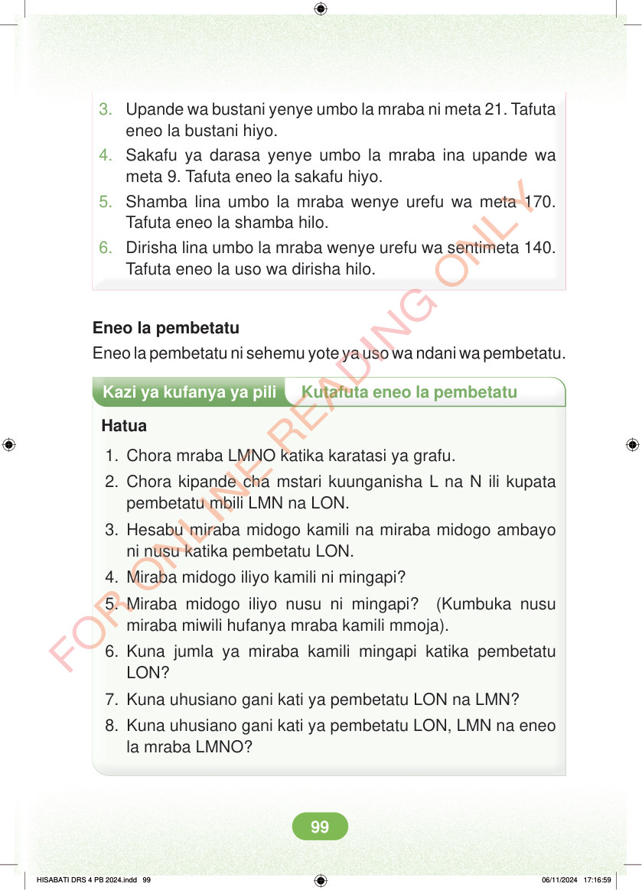

3. Upande wa bustani yenye umbo la mraba ni meta 21. Tafuta eneo la bustani hiyo. 4. Sakafu ya darasa yenye umbo la mraba ina upande wa meta 9. Tafuta eneo la sakafu hiyo. 5. Shamba lina umbo la mraba wenye urefu wa meta 170. Tafuta eneo la shamba hilo. 6. Dirisha lina umbo la mraba wenye urefu wa sentimeta 140. Tafuta eneo la uso wa dirisha hilo. Eneo la pembetatu Eneo la pembetatu ni sehemu yote ya uso wa ndani wa pembetatu. Kazi ya kufanya ya pili Kutafuta eneo la pembetatu Hatua 1. Chora mraba LMNO katika karatasi ya grafu. 2. Chora kipande cha mstari kuunganisha L na N ili kupata pembetatu mbili LMN na LON. 3. Hesabu miraba midogo kamili na miraba midogo ambayo ni nusu katika pembetatu LON. 4. Miraba midogo iliyo kamili ni mingapi? 5. Miraba midogo iliyo nusu ni mingapi? (Kumbuka nusu miraba miwili hufanya mraba kamili mmoja). 6. Kuna jumla ya miraba kamili mingapi katika pembetatu LON? 7. Kuna uhusiano gani kati ya pembetatu LON na LMN? 8. Kuna uhusiano gani kati ya pembetatu LON, LMN na eneo la mraba LMNO? HISABATI DRS 4 PB 2024.indd 99 HISABATI DRS 4 PB 2024.indd 99 06/11/2024 17:16:59 06/11/2024 17:16:59